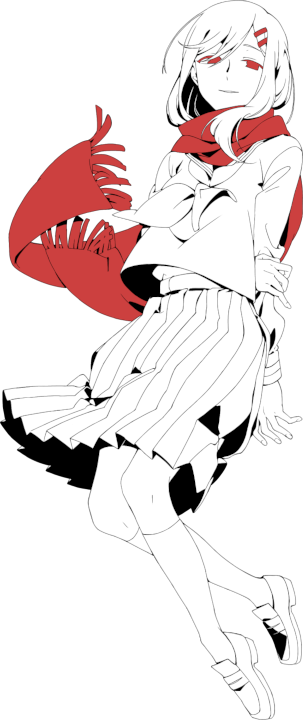
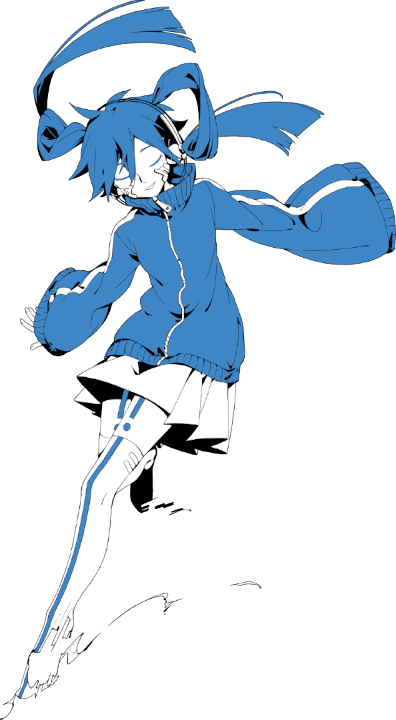

Subscribe to the Newsletter
Get updated when a new demo/patch is released !
A Kagerou Project Fangame
A long time ago ...
An isolated monster spawned in a dark place on August 15th. This monster knew nothing, and tried to learn about herself and about humans.
Eventually, she left this sinister world.Was trying to understand humans a good idea, in the end?
Shintaro Kisaragi,
an 18-year-old boy, became a neet two years ago following the strange disappearance of his only three friends.. On a hot August day, he is forced to go outside but gets unlucky, as he is taken hostage by a group of terrorists.
After being miraculously saved, he joins a group of teenagers named the Mekakushi Dan. The group members all miraculously escaped a deadly accident in the past, and have a power they call their "Eye Ability".
Over time, Shintaro begins to recover his old memories, not knowing he's going to unveil a tragedy directly linked to his past.
Try the game
Based on the many timelines of Jin's (aka. Shizen No Teki-P) mixed-media "Kagerou project", Retaining's memories is a non-profit fan made work that mixes a visual novel gameplay and mini-games.
* : We do not recommand playing the online version.

Recommandations
This game has been created to offer a global vision of the Kagerou Project franchise, and to express our fan side and our skills.
This game do not intent to replace the original serie, nor to steal the official content and publish it on the web.
Due to a small team, we couldn't made the assets by ourselves. This game have official and fan arts that do not belongs to us.
This game contains the global story, so it contains major spoils of the whole franchise.
Age and safety
12+ rated (equivalent to PEGI 12 ou ESRB Teen)
This game is not suitable for epileptics. This game might connect to internet but don't have multiplayer features at the moment.
Does not contains : surprise and horror scene; sexual scenes; realistic casino games; drugs; discrimination and in-app store
Does contains : moderate amounts of violence including blood, suicide, gore; in a drawn and non-realist world; slurs.
We recommand you to play the offline PC version of this game, made for the best gameplay.
If you are using the online version or running the source code "out of the box", please use an updated and popular browser (firefox ou chrome/chromium) !
Indeed, this game use experimental/recent features of the web programming.
We recommand you to learn gameplay controls by clicking the button "help" in the menu.

Credit List
Note that a lot of the assets we use in the game were taken from official kagerou project content.
This document does not detail the credit of these official works since they can easily be found online, but it should be said that the anime soundtracks and backgrounds, the character designs, the song mv illustrations, and the story belong to their original creators and owners, Jin, Sidu, ANANT GARDE EYES, Wanyappu, 1stplace etc...
General credits :
- Programming: Logan Tann
- The game uses a visual novel engine called monogatari and you can find its source code on GitHub.
Some things like Shin’s computer or soon-to-come mini games were totally made from scratch, so be sure to support our main programmer as well as the developers of monogatari!
- Game logo : Sandosan
- Music : taken from the anime OST, the series’ songs, and 8 bit remixes by isonosuke
Prologue - The Old Days
This part of the game is based on the drama CD of the same name. I hope you enjoyed the euclidean geometry. I have to admit I’m not very good at it...
- Writing : Logan Tann, Yoomster
- Ayano and Shintaro’s sprites : Maxence Porelli and Lucie Fournier
- Backgrounds : Eolienne, based on 3D models by Logan
Chapter 1 - Artificial Enemy
Highlight the text to read spoilers of the game after Shintaro leaves his room!
This is a big mix of the ‘artificial enemy’ parts of each medium, however, the subway part was totally made up!
Logan designed and programmed Shin’s computer from scratch, I hope you liked it! it still needs a cringe background though.
Just in case you’re curious, the subway backgrounds were made from the station champ de mars in Paris, a Tokyoite wagon and the map on the wall is London underground! I bet you have no idea who these mysterious kids you met on the train are…
- Writing : Eolienne, Yoomster
- Shin’s room : Lost time memory screenshots edited by Logan
- Ene sprite : Nahusnab
- Ene flashback sprite : Sidu’s design edited by Eolienne
- street : MCA screenshots edited by Eolienne
- subway : Eolienne
- kids in the subway : joe kinging
- Momo poster : Capucine

Project maintained and directed by Kagescan's
Instagram Team (ShinProg - Eolienne)